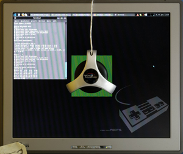

Monitor profilieren mit ArgyllCMS
Dieser Artikel wurde für die folgenden Ubuntu-Versionen getestet:
Ubuntu 16.04 Xenial Xerus
Ubuntu 14.04 Trusty Tahr
Zum Verständnis dieses Artikels sind folgende Seiten hilfreich:
Verwenden eines PPAs, optional
Archive entpacken, optional
Rechte für Dateien und Ordner ändern, optional
Ein einzelnes Paket installieren, optional
 Dieser Artikel beschreibt, wie man seinen Monitor mit Hilfe des Argyll Color Management System
Dieser Artikel beschreibt, wie man seinen Monitor mit Hilfe des Argyll Color Management System  für farbverbindliches Arbeiten profilieren kann. ArgyllCMS besteht aus verschiedenen Kommandozeilen-Programmen, die mit Hilfe eines Kolorimeters Farbwerte, Kontrast und Gamma des Monitors messen. Dann wird die Abweichungen von der Norm gespeichert und danach die Darstellung auf dem Monitor so verändert, dass die Farben korrekt wiedergegeben werden. Über die Monitorprofilierung hinaus beherrscht Argyll noch viele andere Farbmanagement-Anwendungen (u.a. Profilierung anderer Ein- und Ausgabegeräte wie Scanner, Kamera und Drucker sowie Analyse und von Geräte- und Arbeitsraumprofilien), die aber den Rahmen dieses Artikels sprengen würden. Argyll steht unter der GNU Affero General Public License Version 3 und ist damit freie Software.
für farbverbindliches Arbeiten profilieren kann. ArgyllCMS besteht aus verschiedenen Kommandozeilen-Programmen, die mit Hilfe eines Kolorimeters Farbwerte, Kontrast und Gamma des Monitors messen. Dann wird die Abweichungen von der Norm gespeichert und danach die Darstellung auf dem Monitor so verändert, dass die Farben korrekt wiedergegeben werden. Über die Monitorprofilierung hinaus beherrscht Argyll noch viele andere Farbmanagement-Anwendungen (u.a. Profilierung anderer Ein- und Ausgabegeräte wie Scanner, Kamera und Drucker sowie Analyse und von Geräte- und Arbeitsraumprofilien), die aber den Rahmen dieses Artikels sprengen würden. Argyll steht unter der GNU Affero General Public License Version 3 und ist damit freie Software.
Wer eine grafische Oberfläche bevorzugt, sollte sich das Programm dispcalGUI anschauen (siehe unten).
Hinweis:
Um den Monitor mit dieser Anleitung zu profilieren, wird ein Messgerät (Kolorimeter) benötigt (z.B. Spyder  ).
).
Voraussetzungen¶
Erforderlich ist immer das folgende Paket:
icc-profiles (multiverse, Paket mit ICC-Farbprofilen)
 mit apturl
mit apturl
Paketliste zum Kopieren:
sudo apt-get install icc-profiles
sudo aptitude install icc-profiles
Installation¶
ArgyllCMS ist in den offiziellen Paketquellen enthalten. Folgendes Paket muss installiert [1] werden:
argyll (universe)
mit apturl
Paketliste zum Kopieren:
sudo apt-get install argyll
sudo aptitude install argyll
Da die offiziellen Paketquellen häufig nicht die aktuellste Version enthalten, kann es nötig sein (falls beispielsweise das eigene Kolorimeter nicht unterstützt wird), eine aktuellere Version zu installieren. Der einfachste Weg ist, ein fertiges Paket aus einem "Personal Package Archiv" (PPA) [2] einzuspielen. Möchte man mehr Kontrolle, so kann man die vorkompilierten Programmdateien von der Argyll-Projektseite benutzen oder man übersetzt das Programm selbst aus dem Quelltext.
PPA¶
Adresszeile zum Hinzufügen des PPAs:
ppa:pmjdebruijn/argyll-testing
Hinweis!
Zusätzliche Fremdquellen können das System gefährden.
Ein PPA unterstützt nicht zwangsläufig alle Ubuntu-Versionen. Weitere Informationen sind der  PPA-Beschreibung des Eigentümers/Teams pmjdebruijn zu entnehmen.
PPA-Beschreibung des Eigentümers/Teams pmjdebruijn zu entnehmen.
Damit Pakete aus dem PPA genutzt werden können, müssen die Paketquellen neu eingelesen werden.
Nach dem Aktualisieren der Paketquellen erfolgt die Installation wie oben angegeben.
Vorgefertigte Programmdateien¶
Hierzu lädt man die Linux x86 Executables von der Downloadseite  herunter, entpackt sie [3], macht sie ausführbar [4] und kopiert sie ins Verzeichnis /usr/local/bin. Gegebenenfalls müssen noch udev-Regeln für USB-Geräte angepasst werden .
herunter, entpackt sie [3], macht sie ausführbar [4] und kopiert sie ins Verzeichnis /usr/local/bin. Gegebenenfalls müssen noch udev-Regeln für USB-Geräte angepasst werden .
Hinweis!
Fremdsoftware kann das System gefährden.
Grafische Oberfläche¶
Wer eine grafische Benutzerführung bevorzugt, kann das Programm dispcalGUI installieren [5], das ArgyllCMS voraussetzt. Seit Ubuntu 14.04 trusty ist es in den Paketquellen verfügbar. Für frühere Versionen gibt es fertige DEB-Pakete findet man auf der Downloadseite .
dispcalgui (universe)
mit apturl
Paketliste zum Kopieren:
sudo apt-get install dispcalgui
sudo aptitude install dispcalgui

Profilieren¶
Um den Monitor zu profiliern, öffnet man zunächst einen Terminal [6] und wechselt in das Verzeichnis, in welches die Profildaten abgespeichert werden sollen. Der Standard unter Ubuntu ist /usr/share/color/icc. Es kann zwar auch ein beliebiges anderes Verzeichnis gewählt werden, was aber nicht empfohlen wird, da einige Programme wie z.B. Inkscape die Profildaten nur aus dem Standard-Verzeichnis auslesen.
Um die Profilierung zu beginnen, schließt man als erstes das Kolorimeter an.
Monitor-Profilierung¶
Achtung!
Unbedingt den Bildschirmschoner ausschalten, bevor man fortfährt. Das Ausmessen des Bildschirms kann einige Zeit in Anspruch nehmen.
Dazu dienen die Befehle
## Falls man einen CRT-Monitor hat sudo dispcal -v -y c -q h -o TargetA ## Falls man einen LCD-Monitor hat sudo dispcal -v -y l -q h -o TargetA
-q h steht für "High Quality". Bevorzugt man eine schnellere Kalibrierung kann man auch -q l für "Low" oder -q m für "Medium" angeben.
Jetzt erscheint ein schwarzes Feld in der Mitte des Monitors. Nun befestigt man das Kolorimeter so, dass es mit dem Auge auf Höhe des schwarzen Feldes hängt. Dann drückt man ⏎ .
Nun hat man sieben Auswahlmöglichkeiten. Als Erstes wählt man unbedingt "5) Check all" (andere Punkte können zum Einfrieren des Programms führen), um Farbwerte, Kontrast und Gamma des Monitors zu bestimmen. Nun ändert das Feld mehrere Male seine Farbe. Nach einiger Zeit kommt man wieder zu den sieben Einstellungspunkten. Weiter geht es mit "7) Continue on to calibration". Wieder werden verschiedene Farben auf dem Bildschirm eingeblendet. Dieser Vorgang wird einige Zeit in Anspruch nehmen. Nach Abschluss erhält man den Hinweis, dass man das Kolorimeter entfernen kann. Allerdings wird es in Kürze wieder benötigt, deshalb kann man es auch einfach am Bildschirm lassen.
Als Nächstes gibt man folgendes im Terminal ein:
sudo argyll-targen -v -d3 -f836 DisplayA
Hinweis:
In älteren Versionen und bei Installation aus den Standard-Paketquellen unter Ubuntu ab 14.04 heißt dieser Befehl statt argyll-targen targen.
-d3 steht für Video RGB, -f836 für die Anzahl der anzuwendenden Farbpatches, wobei 836 der höchstmögliche Wert und somit die beste Qualität ist. Ausführliche Informationen liefert die Dokumentation von targen .
Dieser Befehl erstellt eine Datei DisplayA.
Nun kommt der dritte Schritt:
## Falls man CRT hat sudo dispread -v -y c -k TargetA.cal DisplayA ## Falls man LCD hat sudo dispread -v -y l -k TargetA.cal DisplayA
Dispread arbeitet dabei die Patches ab, die das Programm targen erstellt hat. Die Anzahl dieser Patches wurde mit dem Parameter -f gemacht. Jetzt muss noch eine .icc-Datei erstellt werden, welches man nachher benutzen kann:
sudo colprof -v -D"Display A" -qm -as DisplayA
Als Letztes muss man nur noch die Veränderung aufrufen. Dies macht man mit dem Programm dispwin.
Hinweis:
Alternativ kann man diesen Schritt auch weglassen, dann wird der Monitor nicht allgemein kalibriert. Die soeben erstellte ICC-Datei lässt sich aber in Programmen mit Farbverwaltung als Bildschirmprofil einstellen.
dispwin DisplayA.icc
Nun sollte sich der Monitor in der Farbe ändern. Im ersten Moment wirkt die neue Farbwiedergabe "falsch", allerdings nur weil man sich an die ursprünglichen, falschen Farben gewöhnt hat.
Farbprofil beim Start automatisch setzen¶
Nach einem Neustart ist das neue Profil nicht mehr aktiv und muss neu geladen werden. Damit das soeben erstellte Farbprofil beim Anmelden automatisch gesetzt wird, muss man sich ein kleines Skript z.B. im Verzeichnis /usr/local/argyllcms erstellen. Dazu erstellt man die Datei /usr/local/argyllcms/set_icc:
sudo touch /usr/local/argyllcms/set_icc
und schreibt folgenden Inhalt in die Datei [7]:
1 2 | #!/bin/bash
dispwin /usr/share/color/icc/DisplayA.icc
|
wobei die Pfadangabe angepasst werden muss, je nachdem wo man sein Profil gespeichert hat und wie man die Datei benannt hat. Nachdem die Datei abgespeichert ist, muss sie noch ausführbar gemacht werden.
Jetzt kann man in den Autostart-Einstellungen mit "Hinzufügen" einen neuen Programmstarter anlegen. Als Name wählt man "Bildschirm ICC-Profil" und als Befehl sh /usr/local/argyllcms/set_icc.
Nun wird bei jedem Anmelden automatisch das neu erstellte Farbprofil geladen.
Firmware für Spyder 2 und Spyder 4¶
Für den Spyder 2 ist jedenfalls eine Firmware notwendig, für den Spyder 4 bringt sie zusätzliche, aber normalerweise nicht notwendige weitere Funktionen.
Die Firmware kann von der Original-Windows-Installations-CD geladen werden:
sudo oeminst -v
Ansonsten kann man die Firmware manuell von der Webseite oder anderen Quellen herunterladen und als Dateiname übergeben:
sudo oeminst -v [Dateiname]
DispcalGUI kann die Firmware auch direkt selbst aus dem Internt laden.
In Ubuntu 12.04 heißt der Befehl spyd2en und funktioniert nur für den Spyder 2.
Problembehandlung¶
Probleme mit Spyder2 und Spyder3¶
Bei Spyder2 und Spyder3 kann es vorkommen, dass sie zunächst nicht ansprechbar sind, obwohl sie mit dem Befehl lsusb als angeschlossene Geräte aufgelistet werden. Es erfolgt dann beim Versuch zu kalibrieren / profilieren eine Fehlermeldung.
Um den Spyder benutzen zu können, gibt man im Terminal folgenden Befehl ein (getestet bis Ubuntu 11.10):
sudo mv /lib/udev/mtp-probe /lib/udev/mtp-probe_save
Nach Abschluss der Kalibrierung / Profilierung kann das mit dem Befehl:
sudo mv /lib/udev/mtp-probe_save /lib/udev/mtp-probe
rückgängig gemacht werden.
Links¶
Offizielle Dokumentation zu Argyll
- (teils recht technisch)foto.beitinger.de Beiträge zur Digitalfotografie
- Private Webseite mit ausführlichen InformationenFarbmanagement für Hobbyfotografen
- Einsteiger- und Hobbyfotografie-freundliche Einführung ins Thema FarbmanagementEinführung in die Monitorkalibrierung und -profilierung
- kürzer und praxisorientierter
Vom Fotorezeptor zum Farbmanagement
- Vorlesungsmaterial (sehr ansprechend aufgemacht und leicht verständlich, viel über physikalische und biologische Hintergründe)
- Erstellt mit Inyoka
-
 2004 – 2017 ubuntuusers.de • Einige Rechte vorbehalten
2004 – 2017 ubuntuusers.de • Einige Rechte vorbehalten
Lizenz • Kontakt • Datenschutz • Impressum • Serverstatus -
Serverhousing gespendet von